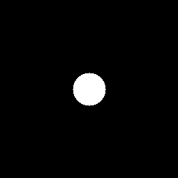
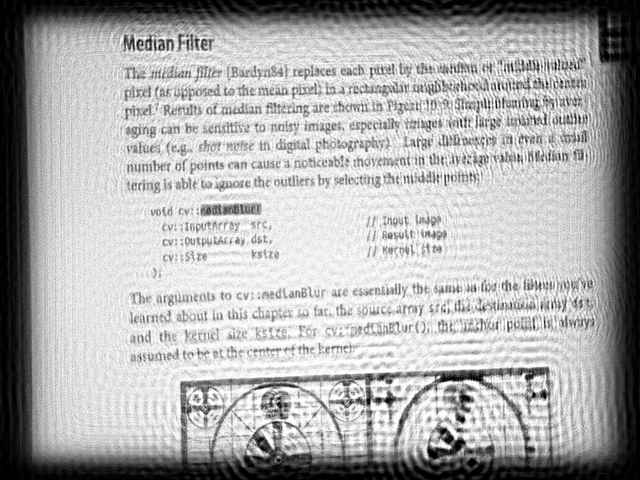

The out-of-focus image on this page is a real world image. The out-of-focus was achieved manually by camera optics.
What is a degradation image model?
Here is a mathematical model of the image degradation in frequency domain representation:
\[S = H\cdot U + N\]
where \(S\) is a spectrum of blurred (degraded) image, \(U\) is a spectrum of original true (undegraded) image, \(H\) is a frequency response of point spread function (PSF), \(N\) is a spectrum of additive noise.
The circular PSF is a good approximation of out-of-focus distortion. Such a PSF is specified by only one parameter - radius \(R\). Circular PSF is used in this work.

Circular point spread function
How to restore a blurred image?
The objective of restoration (deblurring) is to obtain an estimate of the original image. The restoration formula in frequency domain is:
\[U' = H_w\cdot S\]
where \(U'\) is the spectrum of estimation of original image \(U\), and \(H_w\) is the restoration filter, for example, the Wiener filter.
What is the Wiener filter?
The Wiener filter is a way to restore a blurred image. Let's suppose that the PSF is a real and symmetric signal, a power spectrum of the original true image and noise are not known, then a simplified Wiener formula is:
\[H_w = \frac{H}{|H|^2+\frac{1}{SNR}} \]
where \(SNR\) is signal-to-noise ratio.
So, in order to recover an out-of-focus image by Wiener filter, it needs to know the \(SNR\) and \(R\) of the circular PSF.
Source code
You can find source code in the samples/cpp/tutorial_code/ImgProc/out_of_focus_deblur_filter/out_of_focus_deblur_filter.cpp of the OpenCV source code library.
And the following result has been computed with \(R\) = 53 and \(SNR\) = 5200 parameters:

The restored (deblurred) image
The Wiener filter was used, and values of \(R\) and \(SNR\) were selected manually to give the best possible visual result. We can see that the result is not perfect, but it gives us a hint to the image's content. With some difficulty, the text is readable.
Note
The parameter \(R\) is the most important. So you should adjust \(R\) first, then \(SNR\).
Sometimes you can observe the ringing effect in a restored image. This effect can be reduced with several methods. For example, you can taper input image edges.
You can also find a quick video demonstration of this on YouTube.
 1.8.11
1.8.11